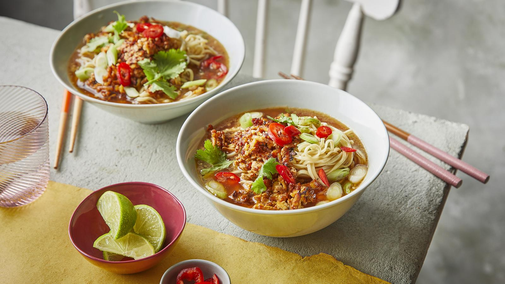

Shredded tofu peanut ramen
Home

Description
This quick and easy vegan noodle soup is packed with umami flavours, from the soy sauce broth to the marinated crispy tofu.
Ingredients
For the shredded tofu
- 200g/7oz extra-firm tofu, coarsely grated
- 2 tbsp dark soy sauce
For the broth
- 1 tbsp sesame oil
- 4 spring onions, trimmed and chopped
- handful fresh coriander, leaves and stalks separated and chopped
- 2 garlic cloves, crushed
- 600ml/20fl oz vegetable stock
- 2 tbsp peanut butter
- 2 tbsp dark soy sauce
To serve
- 125g/4½oz dried noodles
- 1 chilli, sliced (optional)
- 1 lime, cut in half (optional)
Steps
- Preheat an air fryer to 180C or an oven to 200C/180C Fan/Gas 6.
- Place the tofu in a bowl and stir in the soy sauce.
- Cook in the air fryer for 10–12 minutes or in the oven for 15–18 minutes until crispy, turning regularly to ensure even cooking.
- To make the broth, heat the oil in a saucepan over a medium heat. Set aside some of the spring onions for the garnish. Add the remaining spring onions, coriander stalks and garlic to the pan and fry for 5–6 minutes until softened.
- Pour in the vegetable stock, reduce the heat to low and leave to simmer for 10 minutes.
- Mix together the peanut butter and soy sauce in a small bowl. Ladle in a small amount of the hot stock and whisk to emulsify the peanut butter mixture. Once loosened, add to the saucepan and stir to combine.
- To serve, cook the noodles according to the packet instructions. Split the broth between two bowls, add the noodles and garnish with the crispy tofu, reserved spring onions and coriander leaves. Sprinkle over the chilli, if using. Serve immediately with the lime halves for squeezing, if using.